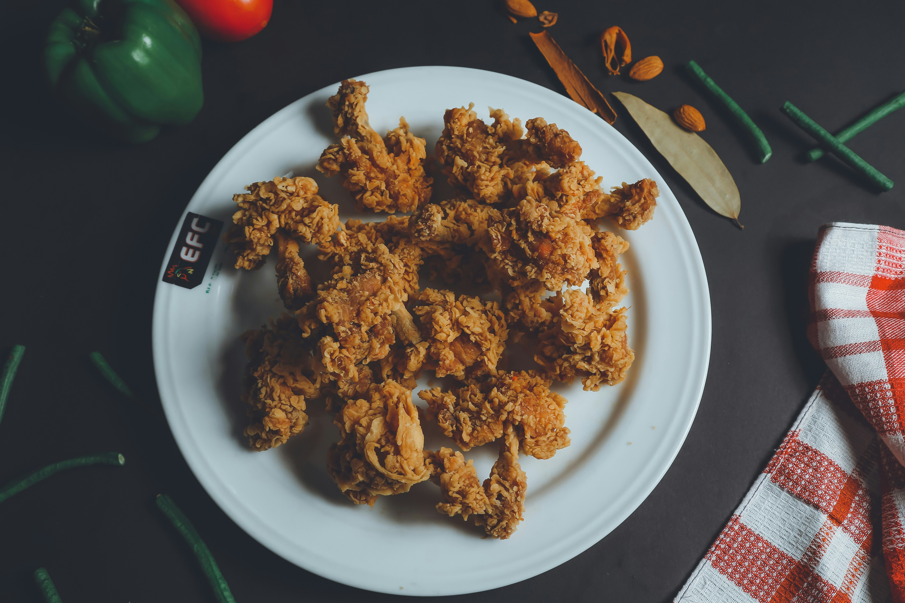
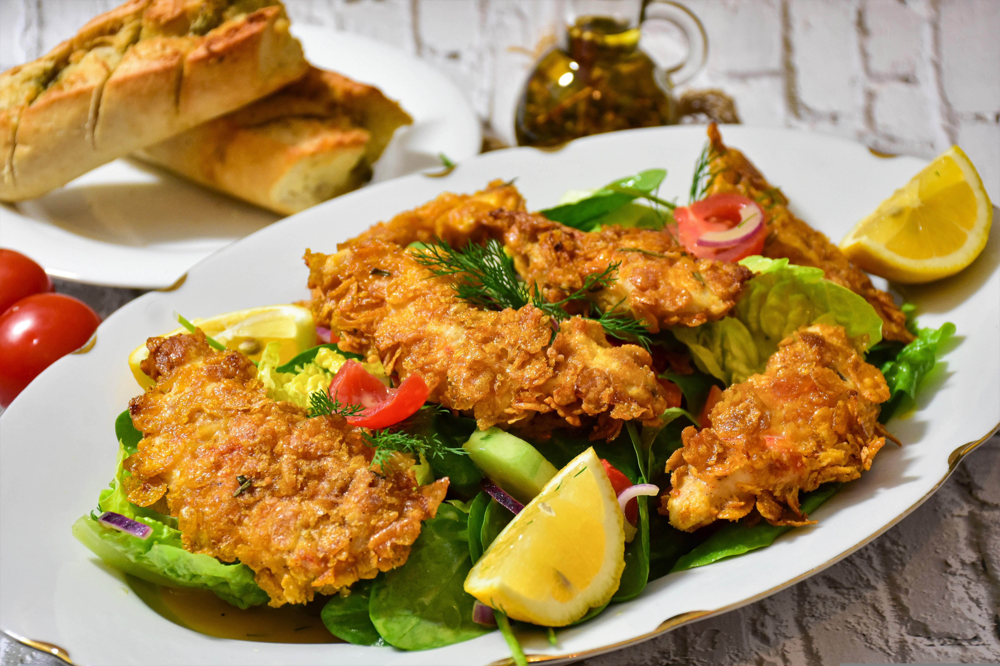
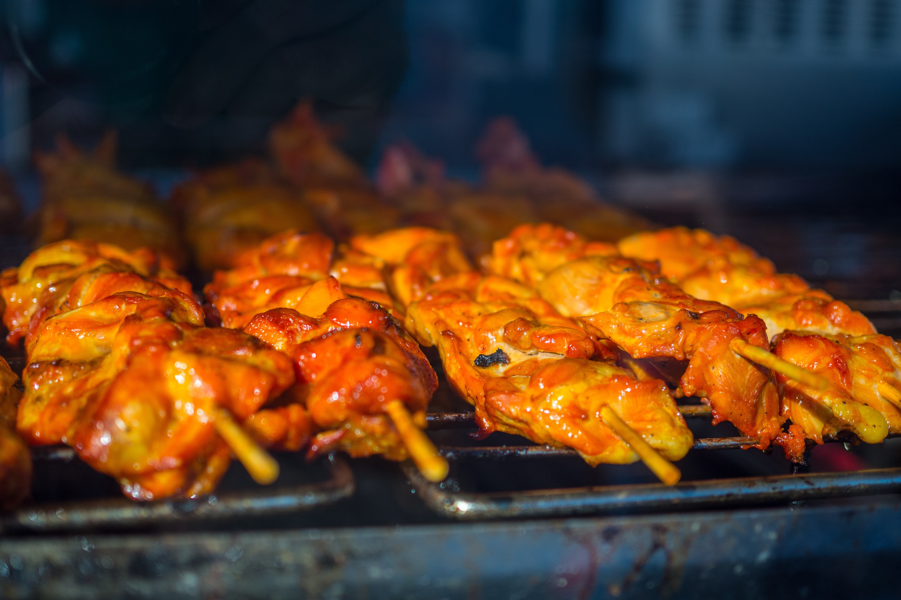
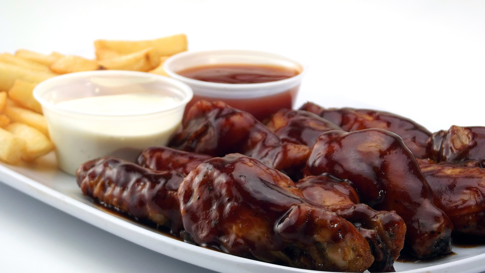
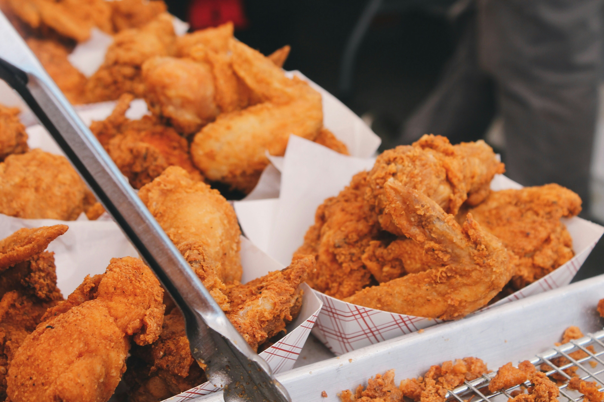
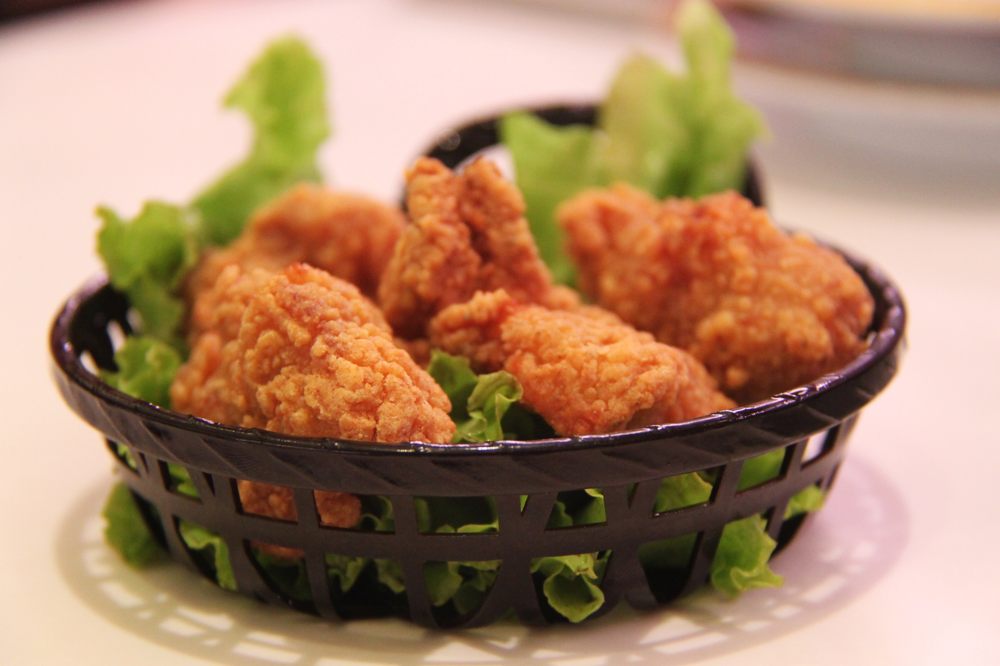
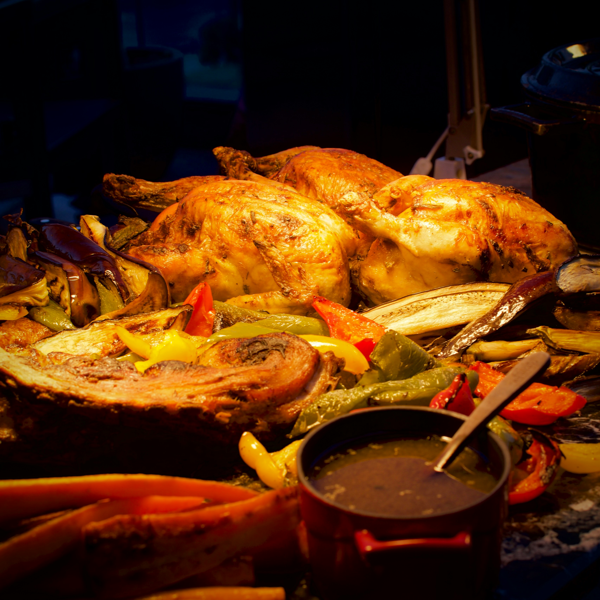
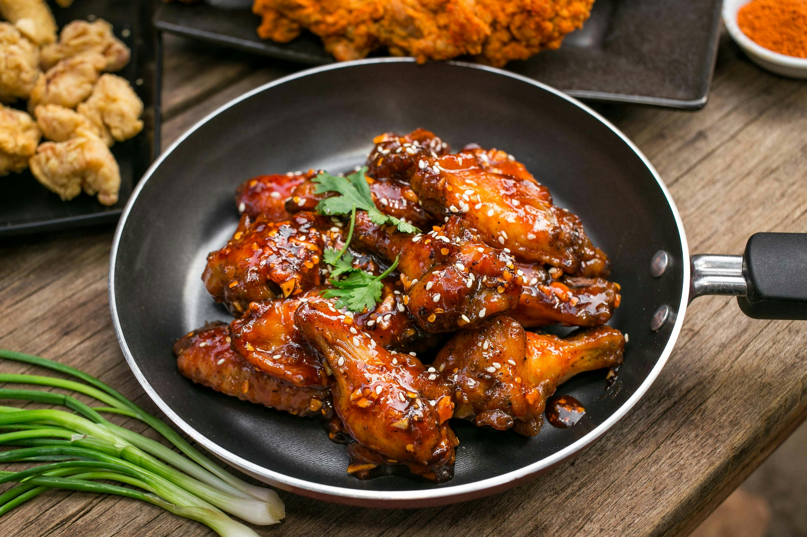

well hello there i seen youve came across the chcicken catagorie. over here you will be looking at chciken different kinds of chcicken and different ways chicken it eaten. first lets talk about where chicken came from chicken south asaia from a chicken! yes, the animal but lots of people eat these daily its also a good protien for you it also has iron and magnesim lets go ahead and admire some good lokin chicken















these types of chicken just look amazing dont they? lets move on to some ice cream noww!